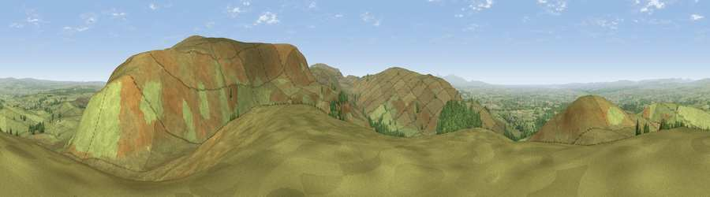

Simmerson Hill
#3587 in England · top 8% of its area beats it · near FarlamThe view, rendered

A 360° render of this exact spot computed from the terrain model, tree cover and land cover — summer colours, afternoon light, calibrated against photographs of famous viewpoints. Real trees, hedges and buildings will differ in detail.
The panorama
Grey silhouette: terrain skyline in each direction (720 bearings, Earth curvature and refraction included). Dashed green: skyline with trees (+15 m) and buildings (+8 m) as obstacles. Blue strip: how far the ground is visible on each bearing.
Where the view opens
Wedge length = distance to the farthest visible ground on that bearing (vegetation-aware). Rings at 10, 25 and 50 km.
What fills the view
93% grassland · 5% woodland · 1% cropland
Angular shares of the visible panorama (visual magnitude), not map area. Landscape diversity 0.14 (0–1 Shannon).
Key numbers
More beautiful places nearby
The staircase of upgrades: each row has a higher view potential than everything closer. Driving times are estimates from straight-line distance, calibrated against real road routing — check an actual route before setting out.
| Place | Direction | Drive | Score |
|---|---|---|---|
| Viewpoint near Farlam | WNW · 1 km | ~3 min | 76.5 |
| Viewpoint near Castle Carrock | SSE · 2 km | ~5 min | 76.9 |
| Viewpoint near Cumrew | SSW · 4 km | ~10 min | 78.8 |
| Barrock Fell | SW · 14 km | ~25 min | 81.1 |
| Viewpoint near Watermillock | SSW · 37 km | ~56 min | 82.6 |
| Viewpoint near Watermillock | SSW · 37 km | ~56 min | 83.5 |
| Skiddaw South Top | SW · 42 km | ~61 min | 85.8 |
| Viewpoint near Applethwaite | SW · 43 km | ~62 min | 86.7 |
54.89715, -2.66148 · source: osm peak · position refined by local search. Computed location — check access rights before visiting.